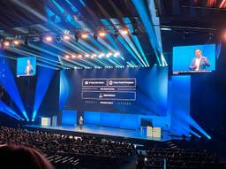
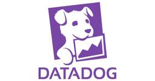
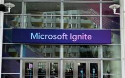

APC 技術ブログ
https://techblog.ap-com.co.jp/
株式会社エーピーコミュニケーションズの技術ブログです。
フィード

【参加レポート】Cisco Live Melborune 2025
APC 技術ブログ
iTOC事業部 マネージドビジネスソリューション部の武居です。 APCの本社NWインフラの請負部隊とICTセールス&コンサルチームの責任者として、お客様へITインフラ周りの提案を行っております。 昨年に続き、今年も 11/10～11/13 オーストラリアで開催された Cisco Live Melborune 2025 に参加してまいりましたので、イベントのレポートをお伝えしていければと思います！ ※ 去年のレポートはこちら techblog.ap-com.co.jp そもそも Cisco Live とは？ Cisco Liveは、世界の3つの地域(North America、EMEA、APJC…
2日前

【Datadog】AWS 全冠の私が、転職を機に「Datadog Fundamentals」を受験し合格した話
APC 技術ブログ
Datadog はいさい！クラウド事業部の上地やいびーん。 はじめに 先日、Datadog の認定資格である 「Datadog Fundamentals」 に合格しました。（AWS に例えると、クラウドプラクティショナー（CLF）でしょうか） APC への転職を機に Datadog の導入・運用支援にも携わる様になりました。 そんな私が、AWS 認定試験との違いなどについてお伝えしたいと思います。 AWS と Datadog の違い AWS においてタグといえば、コスト配分タグやアクセス制御（ABAC）など、「リソース管理のための付箋」という側面が強いです。 一方、Datadog におけるタグ…
6日前

Microsoft Ignite2025 参加レポート DAY4 とまとめ
APC 技術ブログ
DAY4 Japan Networking Lunch まとめ（Wrap up） ACS事業部のご紹介 Microsoft Ignite2025 に現地参加中のACS事業部の井田です。DAY4 の速報と Ignite に参加したまとめをお届けします。 DAY4 DAY4 は午前中のみとなり、会場も Moscone West のみが開かれておりました。残り少ない時間ということもあり発表は少ないですが、ハンズオン形式の lab や資格試験を無料で受験する最後のチャンスなので、比較的この辺りに多くの人が参加されていた印象です。 日本から参加している方々にとっての目玉は Japan Wrap-up S…
7日前

Microsoft Ignite2025 参加レポート DAY3
APC 技術ブログ
各セッションの概要 Simplifying Access Governance with Microsoft Entra ID Access Packages Partner: Making Agentic DevOps your Advantage 小休憩 まとめ（Wrap up） ACS事業部のご紹介 Microsoft Ignite2025 に現地参加中のACS事業部の井田です。DAY3 の速報をお届けします。 発表についての詳細はオンデマンド配信や別の記事に任せるとして、ここでは現地の雰囲気などを伝える気持ちで書いています！ DAY3 は DAY2 と同様で Moscone Cente…
8日前
Microsoft Ignite2025 参加レポート DAY2
APC 技術ブログ
各セッションの概要 Monitoring for multi-agent systems in production Partner: 3 Frontiers Playbook for AI Success in CSP Partners: evaluate and monitor AI agents to build customer trust 小休憩 無料で Azure の試験を受験してきた その他 まとめ（Wrap up） ACS事業部のご紹介 Microsoft Ignite2025 に現地参加中のACS事業部の井田です。DAY2 の速報をお届けします。 発表についての詳細はオンデマ…
8日前
GitHub x Azure OIDC Connect登録をBackstageで省力化する
APC 技術ブログ
GitHub Actionsを使用してAzureに接続する GitHub ActionsからAzureに接続する場合、OIDC Connectionで実現することが多いと思います。 learn.microsoft.com OIDC Connectionを利用するとパスワードなど秘匿情報を登録する必要もなく、安全性の高い方式です。 パスワードの代わりにGitHubとAzureの双方にそれぞれの情報を登録しておくことが必要です。 登録する内容は、Azure側（Entra ID Application登録側）にはGitHub側のOrganization名とリポジトリ名、および環境名といった情報を、G…
9日前
Microsoft Ignite2025 参加レポート DAY1
APC 技術ブログ
会場到着まで Opening Keynote 各セッションの概要 Using Azure SRE Agent to conquer incident response and reliability Tackling your tech debt with GitHub Copilot Manage agents like a pro with Foundry Control Plane Safeguard your agents with AI Red Teaming Agent in Azure AI Foundry まとめ（Wrap up） ACS事業部のご紹介 Microsoft Ig…
9日前
【AWS】ハンズオン「サーバーのモニタリングの基本を学ぼう」（CloudWatch）にチャレンジ！(後編)
APC 技術ブログ
目次 目次 はじめに どんなひとに読んで欲しい 前提 手順 [ハンズオン⑤]：WordPressの監視ダッシュボード作成 1.CloudWatchコンソール操作 2.ダッシュボード名: WordPress_dashboard と入力し、作成 3.「ウィジェットの追加」画面が表示 4.ウィジェット1：EC2のCPU（メトリクス） 5.ウィジェット2：ディスク使用率（アラーム） 6.ウィジェット3：アクセスログ分析（Logs Insights） 7.完成！ [ハンズオン⑥]：EC2インスタンス停止時の通知 1.EventBridgeルールの作成 2.イベントパターンの定義 3.ターゲットの設定 4…
10日前
【AWS】ハンズオン「サーバーのモニタリングの基本を学ぼう」（CloudWatch）にチャレンジ！(前編)
APC 技術ブログ
目次 目次 はじめに どんなひとに読んで欲しい 前提 手順 [事前準備]：CloudFormationとWordPressセットアップ 1.CloudFormationテンプレートの実行 2.WordPressの初期設定 [ハンズオン①]：EC2、ALB、RDSのメトリクス確認 1.CloudWatchコンソール操作 2.EC2のメトリクス 3.ALBのメトリクス 4.RDSのメトリクス [ハンズオン②]：EC2のディスク使用率90%以上時のアラート発報 1.アラームの作成 2.アラームの条件設定 3.アクションの設定 4.アラーム名と作成 [ハンズオン③]：WordPressのアクセスログ、…
10日前
vscodeとdevcontainerでのgit worktreeの使い方を考えてみる。（AI並列開発検討時の副産物）
APC 技術ブログ
こんにちは。 先進サービス開発事業部でNEEDLEWORKの開発を担当している田中です。 今回は、AI並列開発にむけて調査していたところgit worktreeの使い方で 知見を得たのでここに残したいと思います。 誰かの助けになればとても嬉しいです。 gitのworktreeを兄弟ディレクトリとして定義するとdevcontainerの中から参照できない。 git worktreeの例として以下のようなモノが紹介されているかと思います。 path構造 /worktree_master ├──────────/main_branch/ ← ここにgitの状態を管理する.gitディレクトリがある。 …
10日前
【Microsoft Ignite2025】keynote速報 Microsoftの戦略の凄み
APC 技術ブログ
Ignite現地参加しています！ エーピーコミュニケーションズ 取締役 兼 ACS事業部長の上林です。 今回初めて渡航して現地参加してきました。 速報と言うことでkeynoteで気になった点を、かいつまんで紹介しつつ感想を走り書きします(自分の興味なのでFoundryやAzureよりです)。自分の拙い英語での理解ですので誤りがありましたらご容赦。 1. 全体テーマ 基本的にはAIエージェントに移管していく、というメッセージが全体テーマとして貫かれてました。 365系とかazure系とはフラットに扱った上で、移管していくための概念と機能が発表された印象です。 2.気になったポイント Micros…
11日前
Microsoft Ignite2025 参加レポート DAY0
APC 技術ブログ
MS Ignite とは 基本情報 DAY0報告 明日以降の想定 ACS事業部のご紹介 Microsoft Ignite2025に現地参加中のACS事業部の井田です。 せっかくの機会ですので、速報ブログを書きます。速報ブログは発表の詳細ではなく、現地の温度感や雰囲気を極力リアルタイムで共有する目的で速報性重視でいきます。 各種発表についての詳細は、帰国後にオンデマンド配信も含めてピックアップし記事にしたいと考えています。 本日はDay0（Pre-Day）となり、明日に向けての事前準備などが含まれます。 MS Ignite について馴染みのない方に向けて基本情報から紹介していきます！ MS Ig…
11日前
【AWS】「JAWS-UG会津」＆「JP_Stripes会津」合同勉強会 2025 Autumnに参加＆登壇してきました！
APC 技術ブログ
目次 目次 はじめに 勉強会の概要 私の登壇 勉強会に参加して感じたこと おわりに お知らせ はじめに こんにちは、クラウド事業部の馬藤です。 11月7日に開催されました「JAWS-UG会津」＆「JP_Stripes会津」合同勉強会 2025 Autumnに参加＆登壇してきました。 jaws-tohoku.connpass.com 「会津ってどこ？」というのがまず皆さんの最初の疑問かと思いますが、会津は福島県にあります。 福島県は西から会津地方、中通り、浜通りと3つの地域に分かれており、勉強会は私が住んでいる会津若松市(白虎隊やNHK大河ドラマの八重の桜が有名ですね)で開催されました。 これま…
12日前
【実践レビュー】『はじめてのデータブリックス』を読んで Databricksの全機能を「ゼロから体験」してみた
APC 技術ブログ
皆さん、こんにちは！データ分析とAI活用が必須となった今、Databricksが提供する「データ インテリジェンス プラットフォーム」は、多くの企業にとって次世代のデータ基盤として注目を集めています。データウェアハウスの堅牢性とデータレイクの柔軟性を融合した「レイクハウス」の最前線に立つDatabricksですが、その多岐にわたる機能を前にして、「どこから手を付ければいいのか…」と悩む方も少なくないはずです。 今回ご紹介する『はじめてのデータブリックス』は、まさにその悩みを解消してくれる一冊でした。この本のコンセプトはシンプルかつ強力です。 「Databricks の多彩な機能を実際に操作し、…
12日前
【Zscaler】意図しない挙動になるかも！？「カスタムURL」と「親カテゴリーを保持するURL」の違い
APC 技術ブログ
今回は「カスタムURL」と「親カテゴリを保持するURLカテゴリ」の違いを紹介したいと思います。 どちらもユーザが作成する独自のURLカテゴリという点では同じですが、仕様を理解していないと意図しない挙動になるかも知れません！
17日前
HCP Terraform WorkspaceでAzure Provider認証にOIDCを利用する
APC 技術ブログ
はじめに 前提条件 Azure側（Entra ID）でサービスプリンシパルの作成と、フェデレーション資格情報の追加 HCP Terraform Workspaceで環境変数の追加を行う おわりに ACS事業部のご紹介 はじめに こんにちは。ACS事業部の青木です。 このブログでは、HCP TerraformとAzureでOIDC認証連携を行う方法について解説します。 OIDC方式での認証をすることで、デプロイを実行するプリンシパル側でシークレットキーを払い出してHCP Terraform Workspace側に渡すことなく処理を実行することができるようになります。 シークレットキーを使う場合、…
18日前
【OCI】FunctionsとLLMでGitHub通知を自動要約＆Slack連携
APC 技術ブログ
はじめに こんにちは、クラウド事業部の吉本です。 Oracle Cloud Infrastructure (OCI)上でFunctionsとリソース・スケジューラ機能を利用して、定期的にGitHubのNotificationの内容をLLMで要約してSlackに通知するアプリケーションを個人開発したので、開発の流れを紹介します。 本記事では、GitHubやSlackとの接続やプログラムの内容については軽く触れるに留め、OCIでの実装部分を中心に解説します。 アプリ開発の経緯 私は業務でOSSを組み合わせた先端システムの研究を行っており、最新のOSS情報をいち早く集める必要があります。 そのため、…
19日前
【OCI】OracleDBをOCIに移行するメリット（コスト観点）
APC 技術ブログ
目次 目次 はじめに どんなひとに読んで欲しい メリット① 無料枠が充実 メリット② 高性能なDBが低コストで実現 メリット③ OracleDBライセンスやリワードがお得 メリット④ 使わない時間の停止でコスト削減 メリット⑤ クラウド移行時のライセンスの100日特例 おわりに お知らせ はじめに こんにちは、クラウド事業部の齋藤です。 データベースにOracleDBを利用されている方は多いのではないでしょうか？ 基幹システムなど、高性能が求められるシステムで利用されている方も多いのではないかと思います。 そんなOracleDBの会社であるOracle社が、クラウドサービス Oracle Cl…
22日前
APC にジョインした上地（うえち）です
APC 技術ブログ
自己紹介 はじめまして！ 2025 年 10 月に APC にジョインした上地（うえち）です。クラウド事業部 IaC技術推進部 所属です。 沖縄からフルリモートで勤務しています。 （沖縄もすっかり秋めいて…と言いたいところですが、まだまだ半袖が過ごしやすい日々です） 趣味はクラフトビールで、旅行先では必ず現地のブルワリーを探してしまいます。 beer_festival 経歴 新卒で地元の金融機関関連の IT 会社に入社し、メインフレームの運用監視に 10 年以上携わっていました。 安定した日々でしたが、40 代を迎えた頃、「この先のキャリア、このままで良いのだろうか？」と考えるようになりました…
23日前
【GitLab】ブランチ戦略にGitLab Flowを採用して、GitLab CI/CDでIaCの自動デプロイを実現する
APC 技術ブログ
こんにちは、クラウド事業部 CI/CD導入支援サービスチームの西野です。 Ansible PlaybookなどのIaCのコードをGitで管理する際に、どんなブランチ戦略を採用していますか？ ブランチ戦略とは、ソフトウェア開発において、Gitのブランチ機能をどのように使い、管理するかを定めたルールのことです。 代表的なものとしては、以下の3種類があります。 Git Flow GitHub Flow GitLab Flow GitLab Flowについて、詳細は後述しますが、環境に対応するブランチを保持するという考え方のブランチ戦略なので、IaCのコード管理と相性が良いのでは、と考えました。 今回…
25日前
【OCI】2025年10月、改めてOCI認定試験の準備事項をおさらいする。
APC 技術ブログ
こんにちは、クラウド事業部の伊藤です。先日 OCI Architect Associate (2025) を受験しました。 事前の準備不足がたたり、チェックイン作業で切羽詰まっため、改めて試験準備事項をおさらいすることにします。 特に2025年8月からは「**Secure Companion App**」のインストールが必須となっています。 2025年8月以前に受験し、慣れている方でも改めて確認するキッカケになれば幸いです。
1ヶ月前
【AWS】バージニア北部リージョンの障害レポートを読んだので図解してみた
APC 技術ブログ
はじめに こんにちは、クラウド事業部の上野です。 今回はAWSのバージニア北部（us-east-1）リージョンにて、10月19日午後11:48分（PDT）〜 10月20日午後2時20分（PDT）に発生した障害について調べてみました。（日本時間: 10月20日 15:48～ 10月21日 06:20） 詳しい障害の内容については以下レポートを参考にします。この時の障害について図解することで、AWSの内部構造（あくまで記事から読み取れる範囲の想像）まで理解しやすい記事になればと思います。 aws.amazon.com ※注意点 以下に様々な図を出していますが上記の障害レポートから読み取って独自に作…
1ヶ月前
MFA 必須環境下で Amazon Bedrock を Cline (VSCode) から利用しようとしたときの奮闘録
APC 技術ブログ
はじめに Cline の設定 壁となった IAM Policy（MFA 関連） 試行1：AWS CloudShell で一時クレデンシャル利用（失敗） 試行2：ローカル AWS CLI でセッショントークンを取得（成功） 終わりに お知らせ はじめに こんにちは、クラウド事業部の梅本です。 今回は VSCode で Cline を使った AI 活用を行おうとしたときの話です。 Cline は VSCode の拡張機能で提供される、AI を活用したコーディング支援ツールです。 チャットによるコーディング支援のほか、MCP（Model Context Protocol）による外部のツールやデータソ…
1ヶ月前
【OCI】「NRT」or「ap-tokyo-1」？OCIのリージョン・キーに感じるユニークさ
APC 技術ブログ
はじめに こんばんは。クラウド事業部 安藤です。 OCIの資格取得にあたり、Oracle MyLearnを使用したのですが、解説動画や資料でよく例に出てきたリージョン名「NRT」や「KIX」に、旅行好きな私はビビっときてしまいました。TYOやOSAではなく、その都市の主要な空港コードになっているのです！ そんな今回はOCI初学者として、ユニークだと感じたOCIのリージョン・キーについて投稿したいと思います。 リージョン・キーとリージョン識別子 OCIの公式ドキュメントを確認したところ、「NRT」「KIX」といったリージョン名は「リージョン・キー」、 「ap-tokyo-1」「ap-osaka-…
1ヶ月前
【AWS】JAWS FESTA 2025 in 金沢 ボランティアスタッフ参加レポート！！
APC 技術ブログ
(画像はイベントサイトtopより) 目次 目次 はじめに 関連記事 イベントについて JAWS FESTA とは JAWS FESTA 2025 in 金沢 本題には全く関係ない小話 『やっとるげん』 『せんがん』 『ねーじ』 金沢の民へ 本題 会場に関して ボランティアスタッフの流れ (～前日) ①ボランティアスタッフへの申し込み ②ボランティアスタッフの受け付け ③ボランティアスタッフとしての役割確認 (個人としての)④開催前日 ボランティアスタッフの流れ (当日) ①会場への集合、参加のチェックイン ②受付対応の説明、受付開始 ③受付会場の移動、引き続き受付 ④イベントの終盤、片付けなど…
1ヶ月前
Code Scanning と Copilot Autofix を段階的に導入する
APC 技術ブログ
近年、GitHub Copilot などによる AI 駆動開発が普及するにつれ、AI が生成したコードの安全性や真正性を継続的に確認するガードレールが必要となっています。 GitHub Advanced Security の Code Scanning による自動検出と Copilot Autofix による安全な修正の提案を組み合わせることで、生成されたコードの問題（脆弱性やエラー）をレビュー前に発見し、AI 活用による開発スピードとセキュリティ品質のトレードオフを緩和できます。 docs.github.com docs.github.com しかし、これらすべての機能を一度に導入すると、大…
1ヶ月前
【VDI導入の常識が変わる】コスト効率とセキュリティを両立！Accops Partner BootCamp in Japan 2025 参加レポート
APC 技術ブログ
こんにちは！クラウド事業部の田中です。 2025年10月9日(木)に開催された Accops Partner BootCamp in Japan 2025に参加してきました！ 弊社はAccops社が提供する統合仮想化ソリューション「Accops」のパートナーとして、 日頃よりお客様へのセキュアなリモートワーク環境構築をサポートしております。 この記事ではイベント参加によって得られたことを振り返りつつ 皆様に情報発信していこうと思います✨ Accopsとは？ リモートアクセス、VDI（仮想デスクトップインフラストラクチャ）、多要素認証（MFA）、IDフェデレーション、 SSO（シングルサインオン…
1ヶ月前
【OCI】タグ+動的グループ+インスタンスプリンシパルによるOCI CLI動作環境
APC 技術ブログ
はじめに こんにちは、株式会社エーピーコミュニケーションズ クラウド事業部の藤江です。 今回はタグ+動的グループ+インスタンスプリンシパルを使ったOCI CLIの動作環境の構築方法を提示します。 OCI上のインスタンスのみ有効な方法でありますがOCI CLIを使うためだけのユーザ追加が不要で権限管理が容易になるメリットがあります。 権限の割り当て管理は動的グループに割り当てることで実現します。 またインスタンスにタグを割り当てることで、動的グループへの所属を容易に行えます。 コンピュート・インスタンスのOCIDを使って動的グループに所属させることも可能ですが、どのインスタンスに権限を割り当てて…
1ヶ月前
【Datadog】Datadog Fundamentals 合格体験記
APC 技術ブログ
はじめに 勉強方法 1. 公式サイトで全体像を把握 2. Datadog Learning Centerで実機での理解を深める 3. 模擬試験で試験に備える 試験の流れ 1. 自宅オンライン受験の準備と環境設定 2. 試験開始までの流れ 3. 試験概要と当日の感触 4. 試験終了と結果発表 おわりに お知らせ はじめに こんにちは、クラウド事業部の梅本です。 今回は Datadog の基礎資格「Datadog Fundamentals」を受験しましたので、その合格体験記を共有します。 今年は社内で AWS や OCI の資格で盛り上がっていたのですが、最近は Datadog も熱いです！ 以前…
1ヶ月前